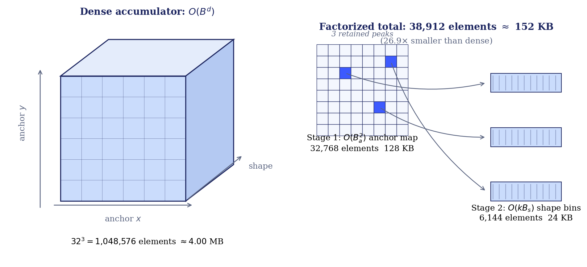
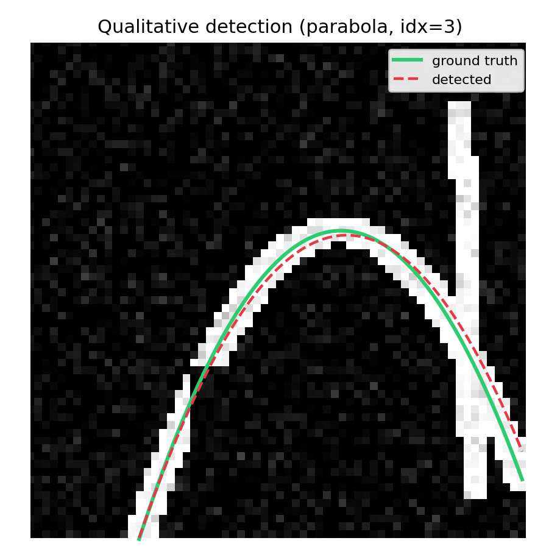

The idea behind my paper "Beyond Lines: A Factorized Deep Hough Transform for Parametric Curve Detection", explained without equations.
Suppose you want a computer to find a straight line in a noisy photo. One classic trick, invented in the 1960s and called the Hough transform, works like an election. Every bright pixel in the image gets to vote for all the lines that could pass through it. A pixel on its own knows very little, but if a real line exists in the picture, then hundreds of pixels along it all end up voting for the same candidate. Count the votes, find the winner, and you have found your line, even if parts of it are hidden or the image is noisy. No single pixel needs to be trustworthy; the agreement is what matters.
A 2021 paper called the Deep Hough Transform gave this old idea a modern upgrade: instead of letting raw pixels vote, it lets a neural network's learned features vote. The network learns what "looks like part of a meaningful line" and the voting machinery turns that local evidence into whole detected lines. It works remarkably well, and it is fast.
Here is the catch. Voting needs a ballot box for every possible candidate. A straight line can be described by just two numbers (its angle and its distance from the center), so the full collection of candidate lines fits in a small two-dimensional table. Cheap.
But most interesting shapes are not lines. An ellipse, the shape of a tilted circle, needs five numbers: where its center is, how long its two axes are, and how it is rotated. If you build a ballot box for every combination of five numbers, the table explodes. At the resolution used in my experiments, the difference looks like this:
Four gigabytes is more memory than a typical graphics card can spare for one layer of one network. This, in a nutshell, is why the deep voting idea stayed stuck at straight lines for years: the ballot boxes would not fit in the building.
The paper's answer is to split the election in two rounds, borrowing a trick from classical computer vision and making it work inside a neural network.
Round one asks only "where." Every curve has a natural anchor point: a parabola has a vertex, a circle and an ellipse have a center. Finding just the anchor is a cheap two-dimensional search, the same size as the original line problem, no matter how complicated the full shape is.
Round two asks "what shape," but only at the winners. Once a handful of promising anchor locations have been found, the method opens a small, detailed ballot box at each one, asking: given that something is centered here, which exact curvature, size, and tilt does the evidence support?
Almost all of the giant table was wasted on locations where nothing was happening anyway. By committing to locations first, the method never has to build it.

Yes, with an honest asterisk. On a benchmark of synthetic images with noise, hidden patches, and decoy line segments, the method finds parabolas, circles, and ellipses, and the whole thing trains end to end like any modern network. Here is a typical detection: the dashed red curve is what the method found, the green one is the truth.

One result I found genuinely interesting: I compared this geometric voting approach against a modern transformer-style detector that simply learns to guess curve parameters directly, with no built-in geometry at all. Under clutter and occlusion, every method that reasons explicitly about geometry, whether classical or deep, beat the free-form learned guesser by a wide margin. Knowing what kind of thing you are looking for turns out to matter more than how fancy your learner is, at least at this scale.
Curved structures are everywhere computers look: lane markings on roads, vessels and anatomical outlines in medical scans, tool and needle trajectories in surgical imaging. The Hough transform's voting principle is also a close cousin of the mathematics behind CT scan reconstruction, which is part of what drew me to the problem. This paper's contribution is not a finished detector for any of those applications; it is the demonstration that the voting idea, long confined to straight lines, can be made to scale to real curve families at all, with the memory arithmetic to prove it.